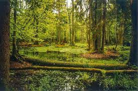

Беловежская пуща – одна из важнейших достопримечательностей Беларуси. Это остатки первобытного леса, простиравшегося когда-то от Балтийского моря до реки Буг и от Одера до Днепра. Беловежская пуща расположена в Брестской и Гродненской областях, входит в число четырех национальных парков Беларуси и является самым большим лесом в центральной Европе. Заповедник находится в 340 км на юго-запад от Минска. Административный центр парка расположен в поселке Каменюки Каменецкого района, в 60 км от Бреста.
Первые письменные упоминания о Беловежской пуще датируются 983 годом. В конце XIV века великий князь Великого княжества Литовского Ягайло объявил пущу заповедной и установил здесь запрет на охоту. В 1588 г. был издан Лесной устав, запрещающий здесь также рубку леса. С 1795 г. территория Беловежской пущи вошла в состав Российской империи, после Первой мировой войны – Польши, с 1939 г. входит в состав Беларуси. Все крупные войны, проходившие на территории этих государств, наносили значительный урон заповедному лесу. Особенно он пострадал во время Наполеоновских войн, а также Первой и Второй мировых войн. В 1939 г. Беловежская пуща объявлена государственным заповедником, а в 1945 г. часть ее была передана соседней Польше.
В настоящее время Национальный парк "Беловежская пуща" является одним из наиболее известных мест Беларуси. В Беловежской пуще произрастают более 1000 видов растений, в том числе редких и исчезающих. Парк знаменит своими древними именными дубами, возраст которых превышает 500 лет. О животном и растительном мире Беловежской пущи рассказывает Музей природы, расположенный на территории парка. Зубров, медведей, оленей и других обитателей пущи можно увидеть в вольерах. В Беловежской пуще находится одно из самых "сказочных" мест Беларуси – Поместье Деда Мороза. В 2019 году на территории Национального парка открыл свои двери для посетителей первый в Беларуси археологический музей под открытым небом.
| Годы обитания | Животное | |
| До 1700 года | Наше время | |
| был | нету | тур |
| был | нету | росомаха |
| был | нету | тарпан |